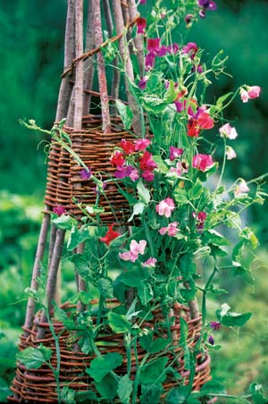

Make Simple, Beautiful Garden Fences And Trellises
Have fun with sticks - transform them into useful, attractive wattle and wickets.
By Barbara Pleasant
April/May 2007
Whether you call them suckers, water sprouts or stump twigs, chances are you have a pretty low opinion of the long, skinny branches that grow from tree stumps or inhabit ditches and fencerows.
But wait - instead of resenting woody whips that insist on regrowing year after year, why not turn them into an asset? Armed with an active imagination and a lopping pruner, you can transform green sticks into pretty trellises, fence panels and plant supports. These simple structures are easy to make, cost practically nothing, and give your garden a handcrafted look. Indeed, once you get the hang of making things with bent and woven wood, you might find yourself wanting to grow these useful branches on purpose.
This is not a new idea. Beginning in the Bronze Age, when knives, saws and hatchets came into use, many Europeans and early residents of the British Isles developed wattle work, the art of weaving branches into walls, fences and roofs. Wattle fences are made by weaving flexible green sapling wood between upright posts, like a wooden tapestry, so they’re both beautiful and strong. They were originally used to contain domestic animals, such as sheep. These days, wattle weaving is a great way to build all kinds of useful rustic garden ac cents from sustainably harvested wood.
Historical Wattle Work
English wattle fences were historically made from willow or hazel wood, both of which are flexible by nature. Wattle work still is a viable small industry in rural Great Britain, where underwood trees are cut back near the base (coppiced) every few years to allow a new crop of fresh shoots to emerge.
Lee Zieke Lee of Willowglen Nursery in Decorah, Iowa, grows willows for the sole purpose of coppicing them every fall, then uses the branches she harvests to make baskets and willow towers. “Close spacing helps the branches grow tall and slender, but they get thick and branchy if you let them go too long - which is two years in our area,” she says. Lee grows more than 30 varieties of willow, all of which are well-behaved selections that don’t spread by producing vigorous root buds the way many native species do. “You can work with native willows, but not in your yard. With most native species, it’s better to coppice them in the wild,” she says.
Lee gathers her willow branches in the fall and keeps them in her root cellar, tied into bundles, through winter. Small willow branches, or osiers, can be allowed to dry, then rehydrated by soaking them in water to restore pliability. This won’t work with species other than willow, but that’s OK because in most climates, you can cut green branches year-round, as you need them. While some projects do require willow, which is more pliable and splinter-resistant than other woods, you can still do a lot with branches from random tree species. As I tried my hand at wattle crafts, I used whatever wood was available, which included a little willow and lots of maple, dogwood, oak and other hardwood branches gleaned from my property, as well as from ditches beside public roads. You can use shrub and fruit tree prunings, too.
Make Garden Wickets
By growing her own willow for coppicing (see “Three Wonderful Willows” below), Lee has a renewable wood source on hand for making a variety of garden accessories. “I love the notion that with a few skills, when you need a little fence or plant supports, you don’t have to go buy anything,” Lee says. She and her husband, Lindsay, bend pliable branches into arches to make garden wickets that protect perennials from foot traffic. “If you leave them in place, they can work as plant supports later in the season,” she says, noting any type of wood can be used for wickets. Whether you link them together to form an edging or place them over plants, all that’s involved is bending 3-foot-long smooth, green branches into an arch, then sticking the ends in the ground. Indoors, two parallel wickets inserted into a pot can provide great support for floppy houseplants, like “paperwhite” Narcissus. When using wickets as outdoor plant supports, Lee suggests placing two or three of them over a plant in one direction, then crossing them with another set of wickets that arch over the first (see Image Gallery).
Build Wattle Hurdles
Functional wattle fence panels, called hurdles, make it easy to section off parts of your yard and garden, plus they’re fun to make. In addition to willow, you can use minimally bendable woods, including oak and maple. You should be able to build a hurdle in a single day, provided you have a source of 30 or so 6-foot-long branches that measure less than 1 inch in diameter at the base ends. I rescued some from a roadside ditch, and now I have a beautiful, handmade 3-by-5-foot hurdle to show for my efforts.
While the art of wattle weaving is generally more detailed than described here, I created a simple, useful hurdle - here’s how it’s done. First prepare five posts that are about 1½ inches in diameter, and 12 inches longer than the anticipated hurdle height. (Crowded saplings taken from the woods work great.) Use a hatchet to sharpen the bases of the posts, then drive them into the ground, 14 inches apart and 12 inches deep. I used a piece of rebar to make guide holes for my posts since I was pounding them into hard clay. You can also make a baseboard for the fence by splitting a long log in half and drilling holes along it for the posts.
Collect a number of long, supple branches and weave them in and out of the posts, allowing the ends to protrude. Alternate the weave of each new row by starting it on the opposite side of the post from the last row. Also alternate the base ends of the branches with tip ends, since the thick bases give a tighter weave. After each branch is in place, push it down to the base of the fence. When you are satisfied with the panel, use loppers to trim off the ends.
For extra stability, I wove hemp string through the ends to further tighten the hurdle. When working with sticks, I’ve come to regard hemp string as the duct tape of the craft. If something’s not quite right, you can usually fix it with hemp string, though traditional wattle hurdles are crafted by wrapping the weaving branches around the end posts to secure them. For more on traditional wattle craft, see “To Learn More” below.
Craft Towers and Trellises
Woven wattle hurdles require lots of branches, but you can make a beautiful twig tower for growing any type of vining plant using only a half dozen 6-foot-long sections. For my beginner’s project (see Image Gallery), I made a tower in a large soil-filled pot.
Stick the uprights as far down into the pot as they’ll go, at equal intervals, to hold the tower steady. Next, wire the top ends of the uprights together. I made two “stretcher” hoops to add structure to the inside of the tower. Using pliable branches and wire, I slipped a small hoop inside the top section of the tower, and a larger one near the bottom. The hoops and wires I used to fasten them together (and to the uprights) disappeared as I wove pieces of grapevine into the tower.
I decided the trellis would work better if it had more horizontal structure, so I gathered more grapevines and added a third band of woven branches. A tight wrap with honeysuckle vines made a great finishing touch for the top. The tower proved to be both beautiful and practical. After it supported a spring crop of snow peas, it served as a summer home for ‘Cypressvine’ morning glories.
The Lees teach a similar method at their garden workshops, where participants make their own towers. Starting with 12 to 13 8-foot branches for the uprights, they tie the uprights together about 2 feet down from the tops. To give the towers added stability, Lee attaches a wire ring inside the uprights, about 12 inches from the ground. To make the ring, she bends #9 fencing wire into a circle and secures it with duct tape, before attaching the ring to each upright on the tower using short sections of wire. Once it’s in place, you can weave branches and vines into the tower above the ring any way you like. To secure the finished tower outside, Lee pounds three pieces of 2-to-3-foot-long rebar into the ground, then wires three of the uprights to the metal stakes.
Of course, there is no law that a plant tower must be 6 or 8 feet tall. Using the methods described here, you can make one shorter or broader, or even a lean-to tower that can be attached to a wall or fence. Use your imagination! “We humans are really an ingenious lot, but we’ve allowed our culture to dumb us down,” Lee says.
Use the Little Sticks
If you work with wattle, you’ll quickly accumulate lots of small sticks that you’ve trimmed from the ends of larger ones. I tied a bunch of these together with hemp string to create a roll-up twig mat that I place over my big planting containers to keep out birds and squirrels while the seeds are germinating. Then I tied together more small sticks to make a seed cover - a long, shallow box that I topped with plastic and use to foster strong germination in my salad bed.
Use shorter twig tips to make a twig vase. Just rescue a glass jar from the recycling bin, place three rubber bands around it, and start sticking in twigs around the outside of the jar. Trim off overly long ends with pruning shears, then tie the twigs in place with hemp, jute, ribbon or raffia. Remove the rubber bands, and you’re done!
If you want more ideas, keep your eyes open when visiting country stores or antiques shacks. I’ve seen little wall shelf units, picture frames, door handles, wind chimes and even decorative window shutters made out of branches and sticks. If you get really serious, there’s rustic twig furniture to consider, though you’ll be wise to start small, with a simple table.
But that’s a subject for another day. Right now, you probably know of a spot or pot that could benefit from a few wickets, a hurdle or a twig tower. The more you play with sticks, the more nifty uses you’re likely to discover.
Three Wonderful Willows
Want to start a willow patch at your place? By growing new willows from cuttings, you can expect good osier production within three years. “We don’t recommend starting the cuttings in pots,” says Bobbie Harrison, who grows dozens of willow varieties with her husband, Ron, at Willow Dreams Farm in Edmonton, Ky. “Willows are one of the most potent natural sources of rooting hormones, so you can expect nine out of 10 cuttings to root successfully, if you root them directly in the ground and control weeds for the first year.”
Harrison says that you can grow willows in any climate that has at least two months of winter dormancy (roughly Zones 2 to 8). To plant cuttings in the spring, push an 8-inch-long cutting into rich, loose soil so that only an inch or so of the stem is showing. Within a couple of months, roots will grow from the nodes on the stem.
These three willow species are suggested to use for coppicing (see “To Learn More” below for mail-order sources for these species and others):
- Golden Willow (Salix alba vitellina): This species includes many varieties with beautiful yellow-orange osiers, and it’s the most cold hardy of willows grown for coppice. Hardy to Zone 4.
- Purple Willow (S. purpurea): Purple willow can be found in many forms, including named varieties, most of which produce purple osiers. This is the most popular willow grown for coppice. Hardy to Zone 4.
- Violet Willow (S. daphnoides): Similar to purple willow, this species grows into a tree rather than a shrub if it’s not coppiced. It is slightly more heat tolerant than purple willow. Hardy to Zone 5.
To Learn More
Read more about traditional wattle weaving and rustic twig ac cents in the books below.
Traditional Woodland Crafts
by Raymond Tabor
Making Bentwood Trellises, Arbors, Gates & Fences
by Jim Long
Willow Sources
Willow Dreams Farm
(270) 432-4486
Willowglen Nursery
(563) 735-5570
Forestfarm
(541) 846-7269
Contributing editor Barbara Pleasant grows purple willow and violet willow for coppice in her North Carolina garden.
|
LYNN KARLIN Wattle fences are made by weaving flexible green sapling wood between upright posts. |
 BARBARA PLEASANT Author Barbara Pleasant makes a wooden garden tower trellis. |
 DAVID CAVAGNARO Homemade garden trellises provide a perfect place to grow vining plants. The same woven twigs used to make wattle fences can be used to create rings that stabilize and beautify garden towers. |
|
BARBARA PLEASANT Wooden wickets keep plants from being trampled and provide support for long-stemmed plants that tend to flop over. |
DAVID CAVAGNARO Once you get the hang of wattle weaving, experiment with different designs. |
DAVID CAVAGNARO Once you’re comfortable working with twigs and branches, try making more ornate garden ac cents and furniture. Experiment! |